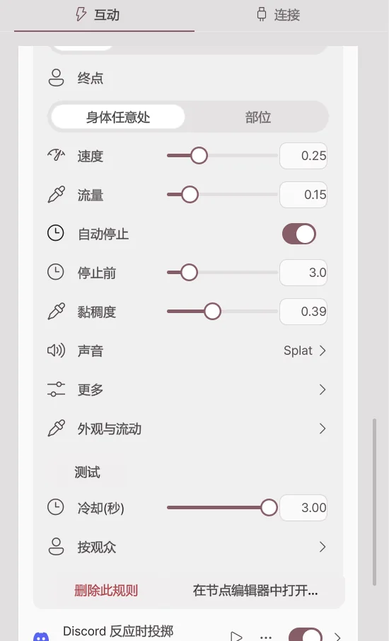
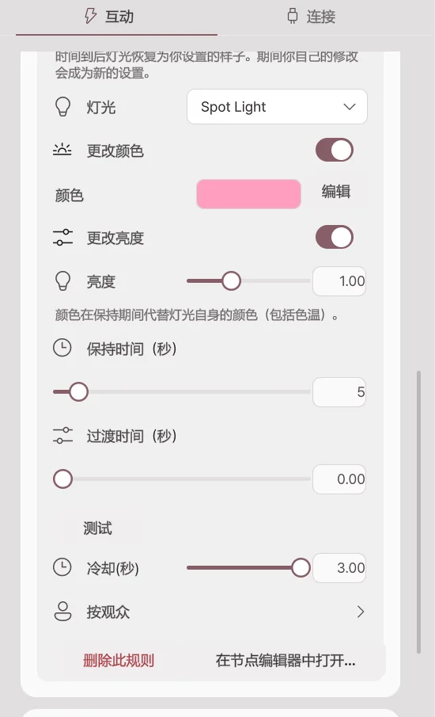
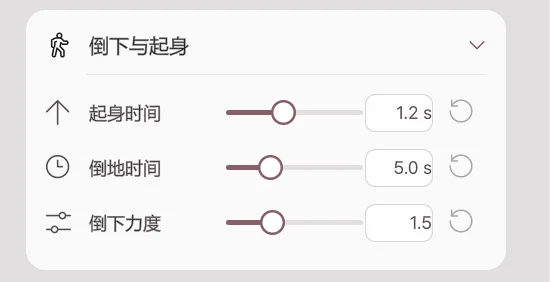
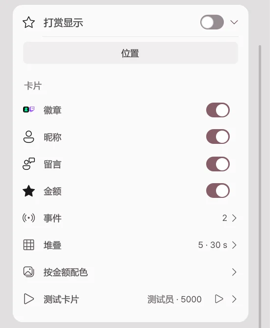
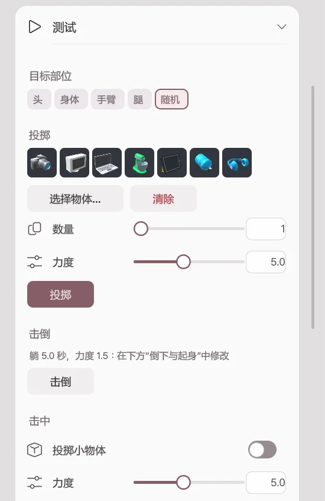

投掷 · 液体 · 倒下
2.2.0 新增功能，2.1.2 及更早版本中没有。
由简易设置条目和节点编辑器运行的角色反应。任何角色·相机都可以使用。它是直播联动功能，需要 Pro，目前为测试版 (Beta)。
投掷
把道具库中的物体投向角色。被击中时，角色会在站立状态下被推开，然后回到原位。
| 设置 | 作用 |
|---|---|
| 物体 | 通过缩略图·分类·搜索选择要投掷的物体。选择多个时，每次随机投掷其中一个。 |
| 起点 | 设置从画面外·边缘·头顶·脸前中的哪里飞来。 |
| 终点 | 瞄准身体任意处，或头·胸·手等部位。 |
| 速度·重量·大小 | 设置击中的快慢和力度，以及物体大小。 |
| 数量 | 一次投掷的数量和间隔。开启按金额后，数量会随打赏金额增加。 |
| 声音 | 投出时·命中时的声音。也可以放入自己的声音文件。 |
| 特效 | 命中时显示冲击·闪光·星星·尘土·爱心·水滴·彩纸特效。 |
| 被击中时的表情 | 选择被击中期间的表情。 |
| 更多 | 设置重力·旋转·存在时间·命中后消失·命中后粘住。 |
液体

从水·果汁·牛奶·蜂蜜·史莱姆·墨水·黄金中选择液体种类，泼向角色。液体会从命中处顺着身体流下，角色会暂时显得湿润，然后变干。
| 设置 | 作用 |
|---|---|
| 起点·终点 | 液体流出的位置和瞄准的位置。也可以从脸前泼洒。 |
| 速度·流量 | 设置泼得多猛、多少。 |
| 自动停止·停止前 | 经过设定的时间后停止。关闭后会持续流出，直到关闭规则或连接。 |
| 黏稠度 | 0 像水，1 像糖浆一样流动。 |
| 声音 | 泼洒和流动的声音。 |
| 外观与流动 | 颜色·发光·反射·表面张力等外观数值。无法运行流体的电脑会以简单水滴绘制。 |
| 湿润外观 | 液体碰到的地方显得湿润的外观和变干时间。对所有液体相同，默认 30 秒后变干。 |
贴纸
把自己的图片文件或文件夹（从中随机）、在线图片、动态 GIF·APNG·WebP 贴到角色上。选择观众头像时，会获取发送事件的观众的头像并贴上。
灯光

暂时把一盏灯打开·关闭·反转，或应用颜色·亮度、效果、预设。持续时间结束后会恢复为原来的灯光。持续时间最短为 1 秒。
倒下与起身

被重重击中或收到击倒动作时，角色会倒在地上，然后慢慢起身。在直播 → 互动 → 倒下与起身中设置。
| 设置 | 作用 |
|---|---|
| 倒下力度 | 倒下时向后推的力度。为 0 时会在原地直接倒下。 |
| 倒地时间 | 起身前躺在地上的时间。用节点击倒时，使用节点的等待时间。 |
| 起身时间 | 从地上起身回到原来姿势所需的时间。为 0 时立即起身。 |
无法倒下的角色在测试时会显示“此角色无法倒下”。
打赏显示

把打赏者的名字和留言以卡片形式显示在场景中的框里。默认关闭。
| 设置 | 作用 |
|---|---|
| 位置 | 像场景中的物体一样移动框并调整大小。 |
| 卡片 | 选择要显示徽章·昵称·留言·金额中的哪些。 |
| 事件 | 要显示的事件：CHZZK 打赏·Twitch 比特·订阅·频道积分。 |
| 堆叠 | 卡片数·显示时间·留言长度·最低金额。 |
| 按金额配色 | 按金额区间改变卡片颜色。 |
| 测试卡片 | 输入昵称·留言·金额，试着添加一张卡片。 |
测试

在直播 → 互动最下方的测试卡片中，无需规则或事件即可立即测试反应。每个按钮运行一次。
| 按钮 | 作用 |
|---|---|
| 投掷 | 按目标部位·力度·数量投掷物体。未选物体时，从库中随机选择。 |
| 击倒 | 让角色倒下。 |
| 击中 | 展示所选部位被击中的反应一次。开启投掷小物体后，物体也会飞来。 |
| 泼液体 | 设置量和方向（正面朝脸·从上方·从左侧·从右侧）后泼洒。 |
| 贴纸 | 随机贴上一张自己的图片。 |
| 还原 | 清除空中的物体·液体·贴纸，并让角色恢复原来的姿势。 |